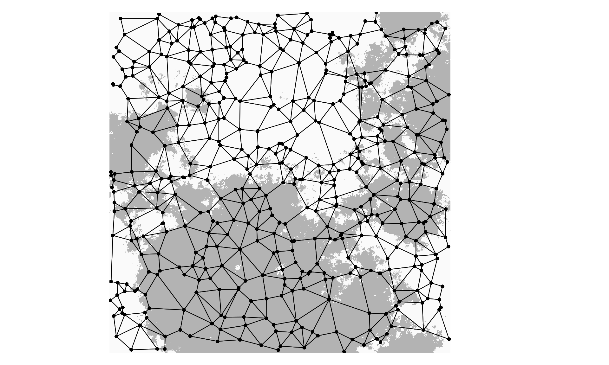
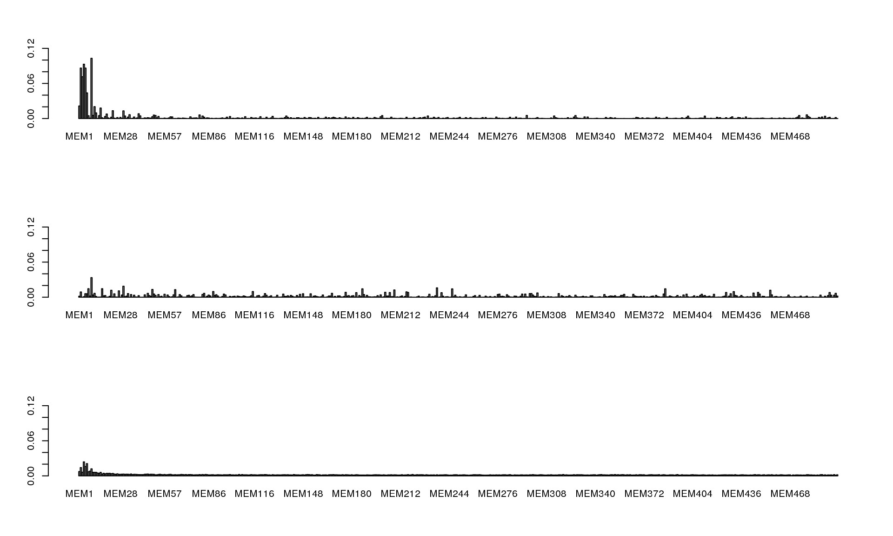
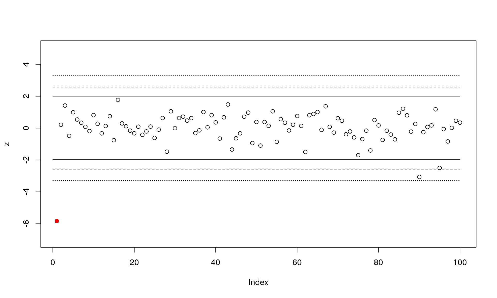
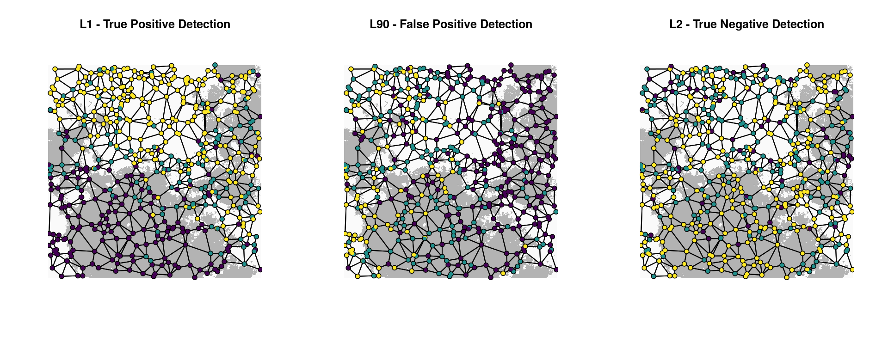

The purpose of this vignette is to illustrate a new outlier detection method that uses genetic data and spatial coordinates to detect loci potentially under selection (Wagner et al. 2016). This method, which we call Moran spectral outlier detection (MSOD), uses the power spectrum of Moran eigenvector maps (MEM) to quantify how variation in the frequency of an allele is distributed across a range of spatial scales defined by MEM spatial eigenvectors.
The power spectrum for a locus is the squared correlation coefficient obtained by correlation of that locus with the MEM eigenvectors. By comparing the power spectrum of an individual locus to the average power spectrum of all of the loci, we can identify outlier loci that show a power spectrum that deviates from the average. This deviation reflects the spatial signature of selection, while the average power specturm (composed primarily of neutral loci) mainly reflects a spatial signature of gene flow. This approach can be used on individual or population based data sets.
If environmental predictors are available, MSOD can be followed by a second step that uses Moran spectral randomization (MSR) to test associations between outlier loci and environmental predictors, while accounting for spatial autocorrelation.
MSOD relies on an assumption of normality under the null hypothesis that the distributions of loci are shaped by the same process (gene flow). Deviations from normality are likely under non-equilibrium and isolation by distance scenarios, which may increase false positive rates. MSR relies on stationarity assumptions, which means that p-values may be inflated if both variables have a linear trend. See Wagner et al. 2016 for more discussion of these assumptions, and how they impact outlier detection in a variety of simulation scenarios.
In this vignette, we’ll walk through an MSOD/MSR example using part of an individual-based simulation data set from Forester et al. 2016. In this case, the genetic data are input as allele counts (i.e. 0/1/2) for each locus. For population-based data, you can input the genetic data as allele frequencies within demes.
The example data provided here are simplified from a CDPOP (Landguth & Cushman 2010) simulation output file. This particular simulation used an aggregated habitat surface (plotted below), a selection coefficient of 5%, and individual dispersal of 5% of the surface per generation. These data are from the first replicate of 10 for these simulations. The full simulation data set is available at Dryad doi: 10.5061/dryad.v0c77, with more information on the simulation scenarios in Forester et al. 2016.
Begin by installing the necessary packages, if you don’t already have them:
The dimensions of our data frame are 500 rows and 103 columns. Every row in the data frame contains information for one individual, so in this example we will be analyzing 500 individuals. Columns 1 and 2 are the X and Y UTM coordinates for each individual. Column 3 is a factor (“Env”) indicating what type of habitat an individual is located in. Columns 4 through 103 are genotypes at 100 loci for each individual. These genotypes are provided as allele counts (0/1/2). Locus 1 (L1) is the locus under selection (responsive to the habitat factor “Env”). The remainder of the loci are neutral (L2 - L100).
dat <- read.csv("data/MSOD_vignette_data.csv") # All the data
Coord <- data.matrix(dat[,1:2]) # The UTM coordinates of the 500 individuals
Env <- as.data.frame(dat[,3]) # Habitat factor for the 500 individuals
Loci <- data.matrix(dat[,4:103]) # Genotypes at 100 loci for the 500 individualsNow that we have loaded the data, our next task is to calculate the Moran eigenvector maps (MEM) from the XY coordinates of our 500 individuals. MEM are orthogonal synthetic variables that provide a decomposition of the spatial relationships among sampling sites based on a spatial weighting matrix (see Dray et al. 2006 and Wagner et al. 2016 for more information).
In the code below, we begin by defining neighbors with a Gabriel graph using function graph2nb. Then we create a spatial weights matrix (object listW) so that neighbors receive a weight that is proportional to the inverse distance between a location and that neighbor. We use function nbdists to calculate Euclidean distances along the links. MEM are then extracted by eigenanalysis. This produces a set of eigenvalues (one for each MEM axis) that quantifies the spatial scale of that MEM. We also obtain the MEM eigenvectors, which are the MEM axes we’ll use for our analysis. In this case, we have 500 individuals sampled at 500 sets of XY coordinates, so we end up with 499 MEM axes.
# Calculate MEM vectors and values
# --------------------------------
nb <- graph2nb(gabrielneigh(Coord), sym=TRUE) # Gabriel graph: neighbor definition
listW <- nb2listw(nb, style="W") # Spatial weights matrix
disttri <- nbdists(nb, Coord) # Add longlat=T for lat/long coordinates
fdist <- lapply(disttri, function(x) x^(-1)) # Use inverse distance weights
listW <- nb2listw(nb, glist=fdist, style="W") # Revised spatial weights matrix
tmp <- scores.listw(listW, MEM.autocor = "all") # Eigenanalysis
mem <- list(vectors = as.matrix(tmp), values = attr(tmp, "values")) # MEM eigenvectors and eigenvalues
mem$values <- mem$values / abs(sum(mem$values)) # Rescale eigenvalues to Moran's ILet’s plot the habitat selection surface, the 500 sampled individuals, and the Gabriel graph used to calculate the spatial weights matrix and MEM variables. First we need to download the ascii Habitat file from the Dryad upload:
# Access the Habitat file
# -----------------------
temp <- tempfile()
download.file("http://datadryad.org/bitstream/handle/10255/dryad.102458/Surfaces_Sample.zip", temp)
zipd <- tempdir()
unzip(temp, exdir=zipd)
Habitat <- raster(paste0(zipd,"/L10H5R1_aa.asc")) # The Habitat ascii file
par(mar=c(1, 1, 1, 1))
plot(Habitat, axes=F, legend=F, box=F, # Plot the selection surface
col=c("gray70","gray98"))
plot(nb, coords=Coord, col=1, pch=16, cex=0.8, add=T) # Add the individuals and Gabriel graph
Now that we have all of the necessary data, we’ll calculate a MEM power spectrum for each of our 100 loci. We do this by calculating correlations R.YV between allele counts (or frequencies) at each locus and all 499 MEM eigenvectors. Note that the square of R.YV for each locus is its power spectrum.
# Correlations between the Loci and MEM axes
# ------------------------------------------
# Calculate R.YV, which contains for each locus the vector of its correlations with all MEM axes.
R.YV <- cor(Loci, mem$vectors, use="pairwise.complete.obs") # R.YV = Correlation with MEM axes
S <- apply(R.YV^2, 2, mean) # S = Average power spectrum
# Plot power spectra
# ------------------
barplot((R.YV^2)[1,], ylim=c(0, 0.12)) # First locus (under selection)
barplot((R.YV^2)[2,], ylim=c(0, 0.12)) # Second locus (neutral)
barplot(S, ylim=c(0, 0.12)) # Average power spectrum (all 100 loci)
Compare the power spectra plots for the locus under selection (top) and a neutral locus (middle). The average power spectrum across all 100 loci is shown at the bottom.
Next, we’ll calculate a z-score for each locus, based on deviation from the average power spectrum. Then we’ll compare outlier detection based on three cutoff options.
cutoffs <- abs(qnorm(c(0.05, 0.01, 0.001)/2)) # Cutoffs (can be modified!)
# Calculate z-scores for power spectra
# ------------------------------------
Dev <- sweep(R.YV^2, 2, S, "/") - 1 # Subtract average power spectrum from each locus.
Dev[Dev > 0] <- 0 # Set positive deviations to zero.
Dev <- apply(Dev, 1, sum) # Sum of negative deviations
z <- scale(Dev) # Standardize
# Plot z-scores for power spectra
# -------------------------------
plot(z, ylim=c(-7,5)) # Plot the z-scores
points(1, z[1], pch=16, col="red") # The locus under selection
for(h in 1:length(cutoffs)) # Add lines for the three cutoffs
{
lines(c(0,100), rep(cutoffs[h],2), lty=h)
lines(c(0,100), rep(-cutoffs[h],2), lty=h)
}
This plot shows the standardized z-scores for the 100 loci (locus under selection in red), along with the three outlier cutoffs. You can see that two loci would be detected as false positives using the most liberal cutoff of 0.05. We’ll continue and just use the middle cutoff of 0.01:
# Apply cutoff to determine outliers
# ----------------------------------
cutoff.msod <- cutoffs[2] # Just the middle cutoff of 0.01
Candidates.msod <- c(1:100)[abs(z)>cutoff.msod] # Candidate loci at this cutoff
TPR.msod <- as.numeric(is.element(1, Candidates.msod)) # True positive rate (is the first locus detected?)
print(paste("True positive rate: ", TPR.msod)) # Yes!## [1] "True positive rate: 1"FPR.msod <- (length(Candidates.msod) - TPR.msod)/99 # False pos. rate (# false detections/99 neutral loci)
print(paste("False positive rate: ", round(FPR.msod, 3)))## [1] "False positive rate: 0.01"print(paste("Falsly identified outlier loci (ID): ",
rownames(R.YV)[Candidates.msod[Candidates.msod > 1]])) # One false positive## [1] "Falsly identified outlier loci (ID): L90"Notice how true and false positive rates change based on the cutoff. Setting a cutoff and deciding on a correction for multiple tests depends on your question and your tolerance for false positives and false negatives.
This step is used as an optional post-MSOD test for association between candidate outliers and environmental predictors. MSR calculates correlations between loci and an environmental predictor while accounting for spatial autocorrelation in both data sets. A randomization approach is used to build a null hypothesis of no correlation, given the power spectra of the candidate outlier and the environmental predictor. See Wagner et al. 2016 for more information on MSR and relevant citations.
# Set a cutoff & number of permutations for MSR
# ---------------------------------------------
cutoff.msr <- 0.05 # Set a less stringent cutoff
nPerm <- 199 # Set number of permutations for MSR test (may choose e.g. 499 or 999)
# MEM correlations for Env and coordinates (as spurious predictors)
# -----------------------------------------------------------------
R.XV.Env <- cor(Env, mem$vectors)
R.XV.xcoord <- cor(Coord[,1], mem$vectors)
R.XV.ycoord <- cor(Coord[,2], mem$vectors)For these simulations, we use the UTM coordinates as spurious environmental predictors. You can think of them as environmental variables that are correlated with latitude and longitude. The correct predictor driving selection at the locus under selection (L1) is “Env”.
# Function to perform MSR test
# ----------------------------
get.pvalue.msr <- function(r.XV=R.XV, r.YV=R.YV, nPerm=199)
{
R.XV.rand <- matrix(r.XV, nPerm, ncol(r.XV), byrow=TRUE)
R.XV.rand <- R.XV.rand * sample(c(-1,1), length(R.XV.rand), replace=TRUE)
Cor.obs <- abs(as.vector(r.YV %*% t(r.XV)))
Cor.rand <- abs(r.YV %*% t(R.XV.rand))
P.values.MSR <- apply((cbind(Cor.obs,Cor.rand) >= Cor.obs), 1, mean)
P.values.MSR
}
# MSR test for candidate outlier loci detected by MSOD
# ----------------------------------------------------
b.Env <- get.pvalue.msr(r.XV=R.XV.Env, r.YV=R.YV[Candidates.msod,], nPerm=nPerm)
b.X <- get.pvalue.msr(r.XV=R.XV.xcoord, r.YV=R.YV[Candidates.msod,], nPerm=nPerm)
b.Y <- get.pvalue.msr(r.XV=R.XV.ycoord, r.YV=R.YV[Candidates.msod,], nPerm=nPerm)
print(paste("Loci significantly associated with Env: ", names(b.Env)[b.Env < cutoff.msr]))## [1] "Loci significantly associated with Env: L1"## [1] "Loci significantly associated with X: L90"## [1] "Loci significantly associated with Y: L1"For this simulation and cutoff, MSOD (Section 2) detected two loci as potentially under selection - one was a correct true positive detection (L1), while the other was a false positive detection (L90). Using MSR (Section 3), we found that our false positive was significantly associated with the spurious “X” predictor, while the true positive detection (L1) was significantly associated with both the driving environmental predictor, “Env”, as well as the spurious “Y” predictor.
Let’s plot the two detected loci and a random neutral locus to visualize the spatial distribution of alleles across the Gabriel graph. In these plots, individuals with no copies of the reference allele (“0”) are purple, indivdiduals with one copy (heterozygotes, coded “1”) are teal, and individuals with two copies (“2”) are yellow.
# Plot the spatial distribution of alleles
# ----------------------------------------
allele_colors <- viridis(3) # Set allele colors
par(mfrow=c(1, 3))
plot(Habitat, axes=F, legend=F, box=F, col=c("gray70","gray98"))
plot(nb, coords=Coord, add=T)
points(Coord, col = allele_colors[Loci[,1] + 1], pch=20)
title("L1 - True Positive Detection")
plot(Habitat, axes=F, legend=F, box=F, col=c("gray70","gray98"))
plot(nb, coords=Coord, add=T)
points(Coord, col = allele_colors[Loci[,90] + 1], pch=20)
title("L90 - False Positive Detection")
plot(Habitat, axes=F, legend=F, box=F, col=c("gray70","gray98"))
plot(nb, coords=Coord, add=T)
points(Coord, col = allele_colors[Loci[,2] + 1], pch=20)
title("L2 - True Negative Detection")
The association of L1 with habitat is clear (left plot). The correlation of habitat (and allele counts) with the y-axis illustrates why the spurious predictor “Y” is also detected as significantly associated with L1. Note also how individual dispersal (up to 5% of the surface per generation in this simulation) means that individuals with maladapted genotypes will sometimes end up in the wrong habitat type; this is not unusual when selection is moderate and habitat is fragmented.
The distribution of alleles for L90 (center plot) is coincident with the x-axis, illustrating how detection associated with the spurious predictor “X” produced a false positive in this case. Lastly, the clearly neutral L2 locus (right plot) shows no association with either habitat, latitude, or longitude.
In summary, Moran spectral outlier detection (MSOD) can be used to reliably identify outlier loci based on their unusual spatial signature, without reference to environmental data. Follow-up analyses using Moran spectral randomization (MSR) can be used to identify potential drivers of selection at these candidate loci, while accounting for spatial autocorrelation. These methods can be used on either individual or population-level samples, and are robust to a variety of sampling designs and sample sizes (Wagner et al. 2016).
Mariana Chávez-Pesqueira (Author)
Stéphanie Manel (reviewer)
Dray S, Legendre P, Peres-Neto PR (2006) Spatial modelling: a comprehensive framework for principal coordinate analysis of neighbour matrices (PCNM). Ecological Modelling, 196, 483-493.
Forester BR, Jones MR, Joost S, Landguth EL, Lasky JR (2016) Detecting spatial genetic signatures of local adaptation in heterogeneous landscapes. Molecular Ecology, 25, 104-120.
Landguth EL, Cushman SA (2010) cdpop: a spatially explicit cost distance population genetics program. Molecular Ecology Resources, 10, 156-161.
Wagner HH, Chávez-Pesqueira M, Forester BR (In press) Spatial detection of outlier loci with Moran eigenvector maps (MEM). Molecular Ecology Resources.
## ─ Session info ───────────────────────────────────────────────────────────────────────────────────
## setting value
## version R version 3.6.0 (2019-04-26)
## os Debian GNU/Linux 9 (stretch)
## system x86_64, linux-gnu
## ui X11
## language (EN)
## collate en_US.UTF-8
## ctype en_US.UTF-8
## tz Etc/UTC
## date 2019-05-11
##
## ─ Packages ───────────────────────────────────────────────────────────────────────────────────────
## package * version date lib source
## ade4 1.7-13 2018-08-31 [1] CRAN (R 3.6.0)
## adegenet 2.1.1 2018-02-02 [1] CRAN (R 3.6.0)
## adegraphics 1.0-15 2018-12-18 [1] CRAN (R 3.6.0)
## adephylo 1.1-11 2017-12-18 [1] CRAN (R 3.6.0)
## adespatial * 0.3-4 2019-02-27 [1] CRAN (R 3.6.0)
## ape 5.3 2019-03-17 [1] CRAN (R 3.6.0)
## assertthat 0.2.1 2019-03-21 [1] CRAN (R 3.6.0)
## backports 1.1.4 2019-04-10 [1] CRAN (R 3.6.0)
## boot 1.3-22 2019-04-02 [2] CRAN (R 3.6.0)
## callr 3.2.0 2019-03-15 [1] CRAN (R 3.6.0)
## class 7.3-15 2019-01-01 [2] CRAN (R 3.6.0)
## classInt 0.3-3 2019-04-26 [1] CRAN (R 3.6.0)
## cli 1.1.0 2019-03-19 [1] CRAN (R 3.6.0)
## cluster 2.0.8 2019-04-05 [2] CRAN (R 3.6.0)
## coda 0.19-2 2018-10-08 [1] CRAN (R 3.6.0)
## codetools 0.2-16 2018-12-24 [2] CRAN (R 3.6.0)
## colorspace 1.4-1 2019-03-18 [1] CRAN (R 3.6.0)
## crayon 1.3.4 2017-09-16 [1] CRAN (R 3.6.0)
## DBI 1.0.0 2018-05-02 [1] CRAN (R 3.6.0)
## deldir 0.1-16 2019-01-04 [1] CRAN (R 3.6.0)
## desc 1.2.0 2018-05-01 [1] CRAN (R 3.6.0)
## devtools 2.0.2 2019-04-08 [1] CRAN (R 3.6.0)
## digest 0.6.18 2018-10-10 [1] CRAN (R 3.6.0)
## dplyr 0.8.0.1 2019-02-15 [1] CRAN (R 3.6.0)
## e1071 1.7-1 2019-03-19 [1] CRAN (R 3.6.0)
## evaluate 0.13 2019-02-12 [1] CRAN (R 3.6.0)
## expm 0.999-4 2019-03-21 [1] CRAN (R 3.6.0)
## fs 1.3.1 2019-05-06 [1] CRAN (R 3.6.0)
## gdata 2.18.0 2017-06-06 [1] CRAN (R 3.6.0)
## ggplot2 3.1.1 2019-04-07 [1] CRAN (R 3.6.0)
## glue 1.3.1 2019-03-12 [1] CRAN (R 3.6.0)
## gmodels 2.18.1 2018-06-25 [1] CRAN (R 3.6.0)
## gridExtra 2.3 2017-09-09 [1] CRAN (R 3.6.0)
## gtable 0.3.0 2019-03-25 [1] CRAN (R 3.6.0)
## gtools 3.8.1 2018-06-26 [1] CRAN (R 3.6.0)
## hms 0.4.2 2018-03-10 [1] CRAN (R 3.6.0)
## htmltools 0.3.6 2017-04-28 [1] CRAN (R 3.6.0)
## httpuv 1.5.1 2019-04-05 [1] CRAN (R 3.6.0)
## httr 1.4.0 2018-12-11 [1] CRAN (R 3.6.0)
## igraph 1.2.4.1 2019-04-22 [1] CRAN (R 3.6.0)
## KernSmooth 2.23-15 2015-06-29 [2] CRAN (R 3.6.0)
## knitr 1.22 2019-03-08 [1] CRAN (R 3.6.0)
## later 0.8.0 2019-02-11 [1] CRAN (R 3.6.0)
## lattice 0.20-38 2018-11-04 [2] CRAN (R 3.6.0)
## latticeExtra 0.6-28 2016-02-09 [1] CRAN (R 3.6.0)
## lazyeval 0.2.2 2019-03-15 [1] CRAN (R 3.6.0)
## LearnBayes 2.15.1 2018-03-18 [1] CRAN (R 3.6.0)
## magrittr 1.5 2014-11-22 [1] CRAN (R 3.6.0)
## MASS 7.3-51.4 2019-03-31 [2] CRAN (R 3.6.0)
## Matrix 1.2-17 2019-03-22 [2] CRAN (R 3.6.0)
## memoise 1.1.0 2017-04-21 [1] CRAN (R 3.6.0)
## mgcv 1.8-28 2019-03-21 [2] CRAN (R 3.6.0)
## mime 0.6 2018-10-05 [1] CRAN (R 3.6.0)
## munsell 0.5.0 2018-06-12 [1] CRAN (R 3.6.0)
## nlme 3.1-139 2019-04-09 [2] CRAN (R 3.6.0)
## permute 0.9-5 2019-03-12 [1] CRAN (R 3.6.0)
## phylobase 0.8.6 2019-02-02 [1] CRAN (R 3.6.0)
## pillar 1.3.1 2018-12-15 [1] CRAN (R 3.6.0)
## pkgbuild 1.0.3 2019-03-20 [1] CRAN (R 3.6.0)
## pkgconfig 2.0.2 2018-08-16 [1] CRAN (R 3.6.0)
## pkgload 1.0.2 2018-10-29 [1] CRAN (R 3.6.0)
## plyr 1.8.4 2016-06-08 [1] CRAN (R 3.6.0)
## prettyunits 1.0.2 2015-07-13 [1] CRAN (R 3.6.0)
## processx 3.3.1 2019-05-08 [1] CRAN (R 3.6.0)
## progress 1.2.0 2018-06-14 [1] CRAN (R 3.6.0)
## promises 1.0.1 2018-04-13 [1] CRAN (R 3.6.0)
## ps 1.3.0 2018-12-21 [1] CRAN (R 3.6.0)
## purrr 0.3.2 2019-03-15 [1] CRAN (R 3.6.0)
## R6 2.4.0 2019-02-14 [1] CRAN (R 3.6.0)
## raster * 2.8-19 2019-01-30 [1] CRAN (R 3.6.0)
## RColorBrewer 1.1-2 2014-12-07 [1] CRAN (R 3.6.0)
## Rcpp 1.0.1 2019-03-17 [1] CRAN (R 3.6.0)
## remotes 2.0.4 2019-04-10 [1] CRAN (R 3.6.0)
## reshape2 1.4.3 2017-12-11 [1] CRAN (R 3.6.0)
## rlang 0.3.4 2019-04-07 [1] CRAN (R 3.6.0)
## rmarkdown 1.12 2019-03-14 [1] CRAN (R 3.6.0)
## rncl 0.8.3 2018-07-27 [1] CRAN (R 3.6.0)
## RNeXML 2.3.0 2019-01-24 [1] CRAN (R 3.6.0)
## rprojroot 1.3-2 2018-01-03 [1] CRAN (R 3.6.0)
## scales 1.0.0 2018-08-09 [1] CRAN (R 3.6.0)
## seqinr 3.4-5 2017-08-01 [1] CRAN (R 3.6.0)
## sessioninfo 1.1.1 2018-11-05 [1] CRAN (R 3.6.0)
## sf * 0.7-4 2019-04-25 [1] CRAN (R 3.6.0)
## shiny 1.3.2 2019-04-22 [1] CRAN (R 3.6.0)
## sp * 1.3-1 2018-06-05 [1] CRAN (R 3.6.0)
## spData * 0.3.0 2019-01-07 [1] CRAN (R 3.6.0)
## spdep * 1.1-2 2019-04-05 [1] CRAN (R 3.6.0)
## stringi 1.4.3 2019-03-12 [1] CRAN (R 3.6.0)
## stringr 1.4.0 2019-02-10 [1] CRAN (R 3.6.0)
## testthat 2.1.1 2019-04-23 [1] CRAN (R 3.6.0)
## tibble 2.1.1 2019-03-16 [1] CRAN (R 3.6.0)
## tidyr 0.8.3 2019-03-01 [1] CRAN (R 3.6.0)
## tidyselect 0.2.5 2018-10-11 [1] CRAN (R 3.6.0)
## units 0.6-3 2019-05-03 [1] CRAN (R 3.6.0)
## usethis 1.5.0 2019-04-07 [1] CRAN (R 3.6.0)
## uuid 0.1-2 2015-07-28 [1] CRAN (R 3.6.0)
## vegan 2.5-4 2019-02-04 [1] CRAN (R 3.6.0)
## viridis * 0.5.1 2018-03-29 [1] CRAN (R 3.6.0)
## viridisLite * 0.3.0 2018-02-01 [1] CRAN (R 3.6.0)
## withr 2.1.2 2018-03-15 [1] CRAN (R 3.6.0)
## xfun 0.6 2019-04-02 [1] CRAN (R 3.6.0)
## XML 3.98-1.19 2019-03-06 [1] CRAN (R 3.6.0)
## xml2 1.2.0 2018-01-24 [1] CRAN (R 3.6.0)
## xtable 1.8-4 2019-04-21 [1] CRAN (R 3.6.0)
## yaml 2.2.0 2018-07-25 [1] CRAN (R 3.6.0)
##
## [1] /usr/local/lib/R/site-library
## [2] /usr/local/lib/R/library